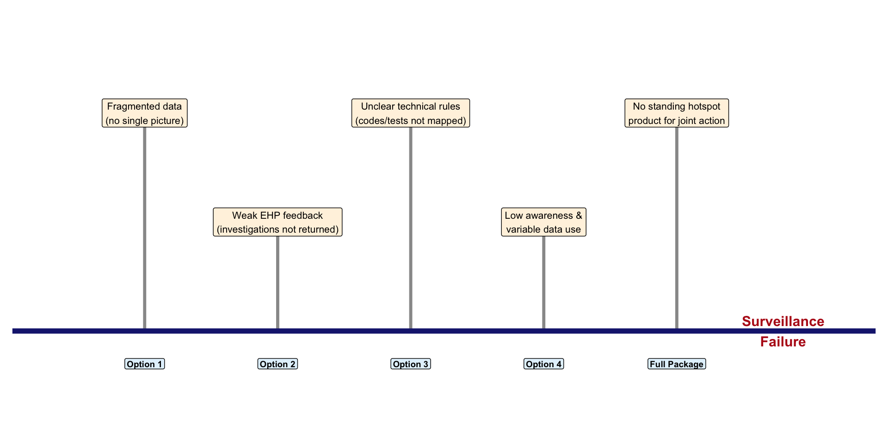
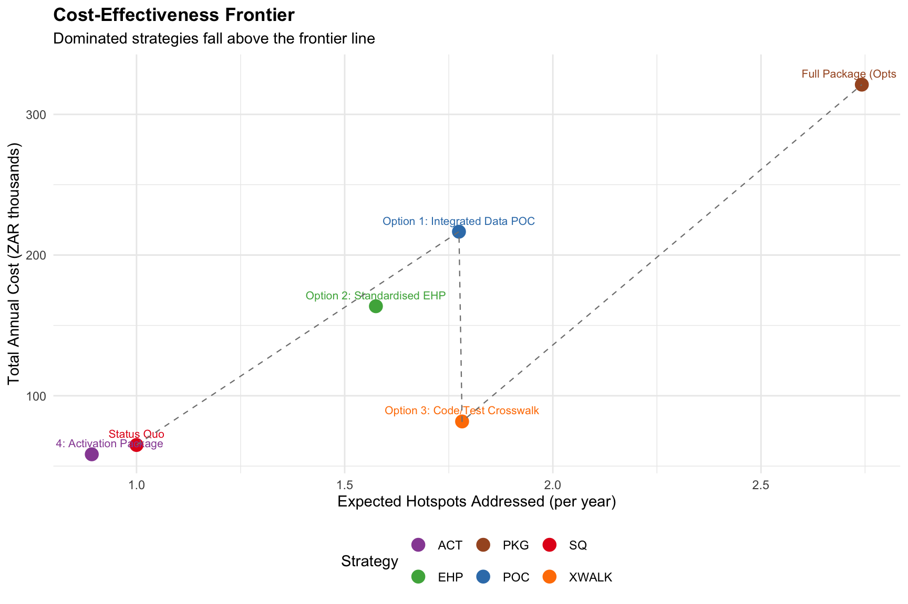
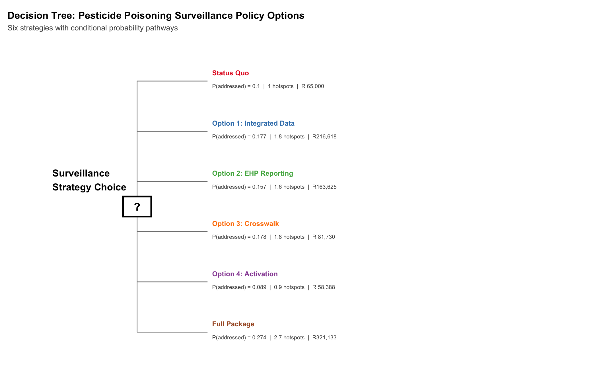
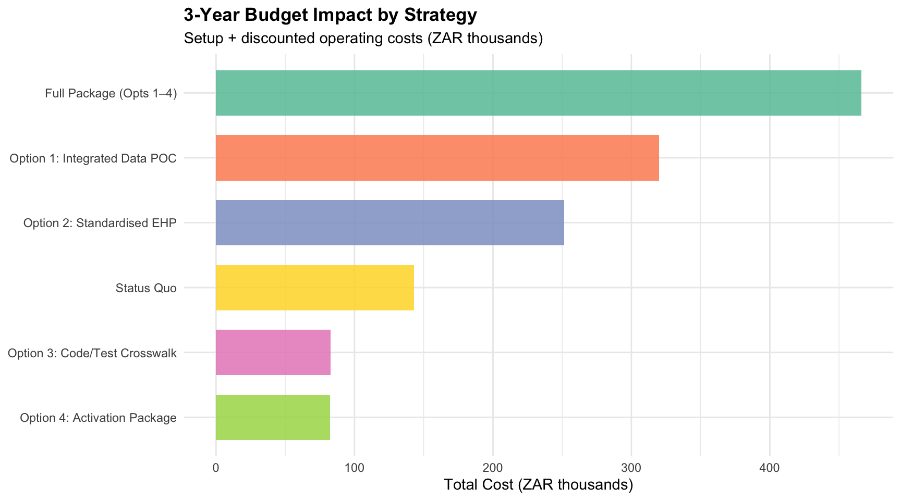
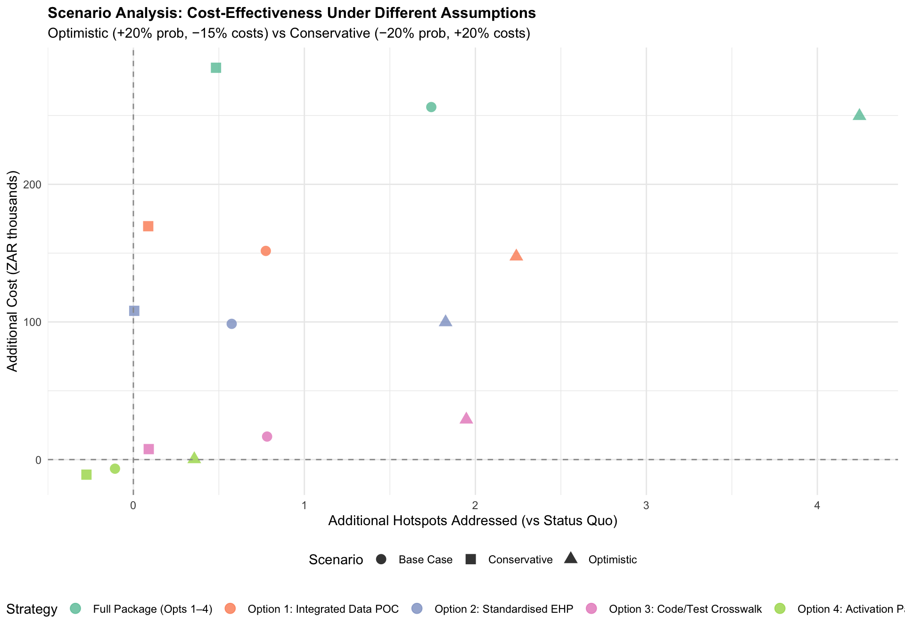
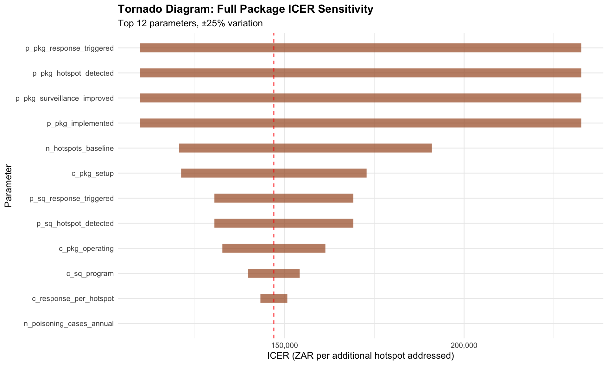
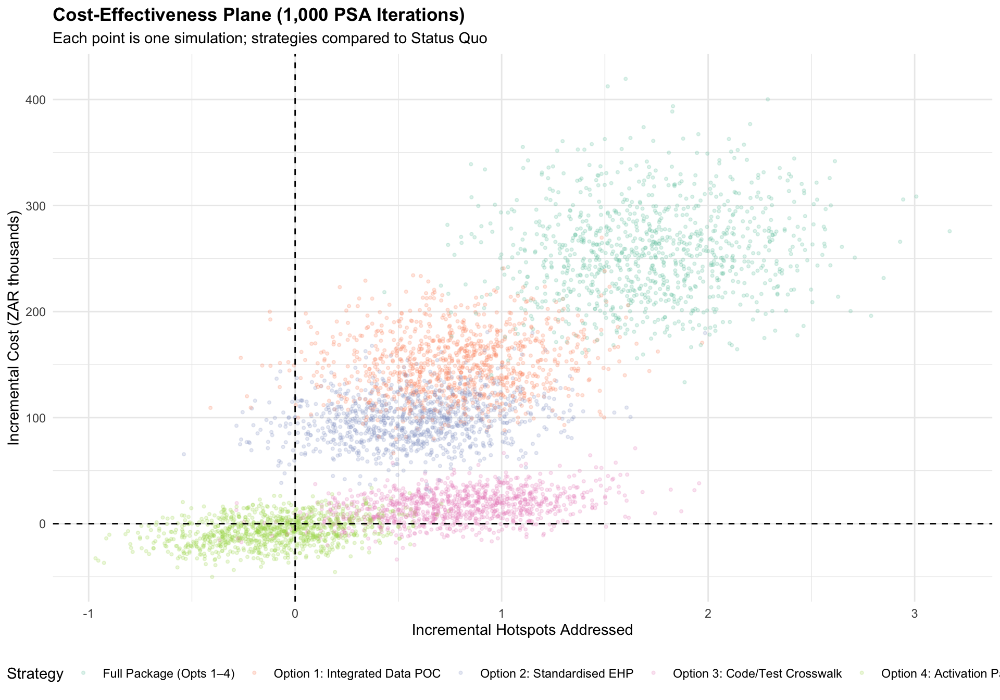
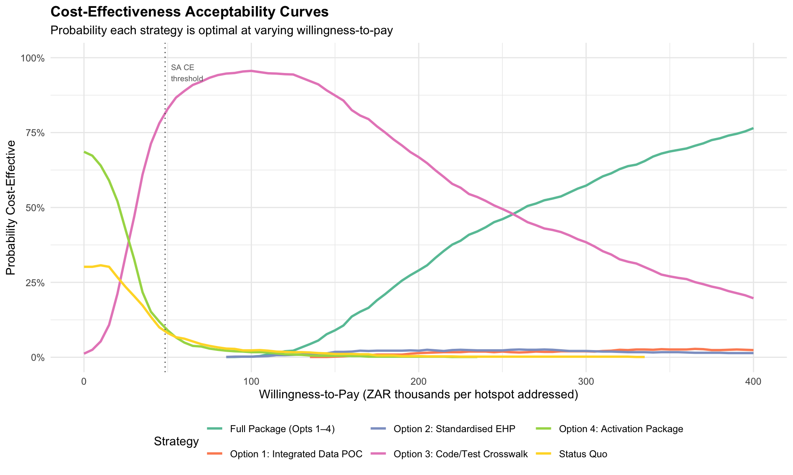
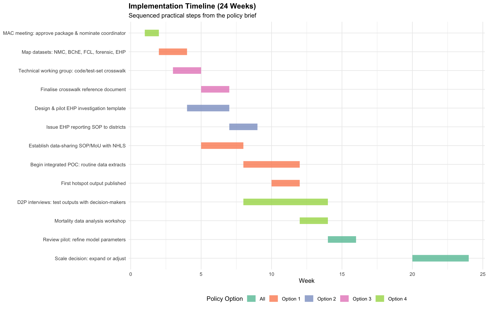

Technical Appendix A — Surveillance Decision Analysis
Legacy 5-option taxonomy: cost-effectiveness model for surveillance investments (Option S3 family)
NoteWhere this appendix fits
This appendix presents the formal decision-analytic model behind the Surveillance brief. It uses the original 5-option v1 taxonomy (SQ, Option 1–4, Full Package) which has since been re-expressed in the S-taxonomy used by the brief (S1–S4). Mapping:
| v1 (this appendix) | v3 (brief) | Description |
|---|---|---|
| Option 1 | S2 | Inter-agency data sharing / MOUs |
| Option 2 | S2 | DALRRD / SAPS integration |
| Option 3 | S3a | NHLS BChE auto-notification |
| Option 4 | S1 | PIH quarterly reporting |
| Full Package | S1+S2+S3a | Combined detection upgrade |
The live-patient chemical-toxicology investment (S3b) is not in this v1 model — it is treated separately in Technical Appendix D — Sentinel Toxicology.
Sister appendices: B — Coordination model · C — Terbufos bracketed estimate · D — Sentinel toxicology.
Executive Summary
ImportantThe core question
South Africa already has the legal basis to act on pesticide poisoning — the constraint is weak execution across existing systems. Which combination of short-term institutional actions will most efficiently improve hotspot detection and response, and at what cost?
This report evaluates five policy options (plus the status quo) for strengthening pesticide poisoning surveillance in South Africa. Each option targets a specific system failure identified through fishbone analysis and can be implemented without new legislation.
Key findings under base-case assumptions:
- The status quo detects and responds to approximately 1 of an estimated 10 annual poisoning hotspots
- The lowest-cost improvements (Options 3 and 4) cost under R65,000/year and can be launched within weeks
- The Full Package (all four options) addresses 2.7 hotspots — a 174% improvement over the status quo
- All parameters are placeholders — the model is designed to be updated as real data become available from the surveillance pilot
TipHow to use this document
This report serves three audiences:
- Decision-makers (MAC, NDoH): Read Sections 2–3 for plain-language option comparisons
- Technical team (NICD, NHLS analysts): Read Sections 4–7 for model details and sensitivity analysis
- Model developers: Read Section 8 for instructions on updating parameters and extending the model
1 The Problem: Why Act Now?
1.1 Burden of Pesticide Poisoning
From 2020 to 2024, three independent data sources paint a consistent picture:
| Indicator | Value | Source |
|---|---|---|
| NMC notifications (total, 5 years) | 3,457 | NICD NMC system |
| Average annual NMC notifications | ~690 | NICD NMC system |
| NHLS BChE tests per year | ~10,000 | NHLS laboratory data |
| Severe BChE inhibitions per year | ~2,000 | NHLS laboratory data |
| PIH clinician calls (2019) | 1,881 | Poisons Information Helpline |
| Seasonal peak | September–November | All three sources |
Who is affected?
- Infants and toddlers (< 6 years): 99% of exposures are accidental — from environmental contact, contaminated food, or pesticides stored unsafely at home
- Adolescent females (15–19 years): The highest age-standardised rate (ASR 0.46 per 100,000 for BChE cases), with 91% classified as intentional self-harm
- Adult males (30+): Occupational exposures in agricultural settings
WarningUnder-counting is substantial
The ~690 NMC notifications per year almost certainly under-represent the true burden. BChE data alone show ~2,000 severe inhibitions annually. Evaluations of the NMC system describe incomplete reporting, incorrect data, and discrepancies between notification and laboratory records. The real number of poisonings may be 3–5 times higher than what is currently captured.
1.2 Root Causes: What Can Be Fixed Now?
The policy brief’s fishbone analysis identifies five institutional failures — none require new laws to address:
2 Policy Options: What Is on the Table?
| Table 1: Policy Option Profiles | ||||||
| What each option does, why it matters, and how quickly it can deliver | ||||||
| Option | Name | What It Does | Problem Addressed | Lead | Feasibility | Time to First Output |
|---|---|---|---|---|---|---|
| Option 1 | Integrated Data POC | Combines NMC notifications, cholinesterase lab data, forensic signals, and EHP field reports into a single dashboard to spot poisoning clusters | Fragmented data — no single picture of where poisonings are happening | NICD analyst with NHLS and forensic data custodians | Moderate–High: needs SOP/MoU, not law reform | 8 weeks |
| Option 2 | Standardised EHP Reporting | Gives every Environmental Health Practitioner one short template to report pesticide investigations, and feeds those reports back to the surveillance team | EHPs investigate but findings are not captured or returned centrally | NDoH Environmental Health directorate, SALGA | High: can be issued by circular or SOP | 6 weeks |
| Option 3 | Code/Test-Set Crosswalk | A technical reference mapping lab test codes, ICD codes, and NMC case definitions so the system consistently flags poisoning cases across platforms | Staff do not know which tests/codes should trigger a poisoning NMC — causes under-counting | Technical working group: NICD, NHLS, forensic pathology | Very High: a small working group can complete this in days | 4 weeks |
| Option 4 | Activation Package | Uses the next MAC meeting to approve the pilot, D2P interviews to identify what outputs decision-makers actually need, and a mortality workshop to improve data interpretation | Low awareness, variable data use, weak connection between data and decisions | MAC chair; D2P research team | Very High: existing meeting platforms | 2 weeks |
| Full Package | All Options Combined | Implements all four options as a coordinated 6-month package, with the MAC meeting as the launch mechanism | All root causes addressed simultaneously for maximum synergy | Lead coordinator nominated at MAC meeting | Moderate: coordination overhead but no single option is very difficult | 8–12 weeks for first integrated output |
2.1 Option 1 — Integrated Data-Sharing and Hotspot Pilot
What changes for stakeholders:
- For NICD analysts: A routine (initially manual) process to pull data from NMC, NHLS, forensic pathways, and EHP systems into one dataset
- For district health managers: A periodic hotspot map showing which sub-districts have clustering events — enabling targeted response rather than waiting for individual case reports
- For MAC members: The first evidence product that demonstrates whether integrated surveillance can work before investing in automation
What this requires:
- A data-sharing SOP or MoU with each data custodian (NHLS for BChE/FCL, forensic pathology services)
- One dedicated analyst to run routine extracts and produce outputs
- Named leads at each custodian organisation
Key assumptions in the model:
| Parameter | Value | What it means |
|---|---|---|
| P(data access via SOP) | 0.70 | 70% chance the data-sharing agreements are established |
| P(data usable once accessed) | 0.65 | 65% chance extracted data is complete enough to analyse |
| P(hotspot detected) | 0.60 | Given usable data, 60% chance of identifying a real cluster |
| P(response triggered) | 0.65 | Given detection, 65% chance of follow-up action |
| Setup cost | R120,000 | SOP development, data mapping, initial analyst time |
| Annual operating | R70,000 | Ongoing analyst time, routine extracts and reports |
2.2 Option 2 — Standardised EHP Investigation Reporting
What changes for stakeholders:
- For EHPs: One clear template replaces variable, person-dependent reporting — reduces ambiguity about what to collect
- For the surveillance team: EHP investigation data (source identification, exposure context, packaging information) flows back centrally for the first time
- For district managers: Visibility into what actions EHPs are taking and what they are finding
What this requires:
- A one-page investigation template (aligned with the 2022 NDoH guideline)
- A circular or service standard requiring submission back to the surveillance team
- Brief training on template completion
Key assumptions in the model:
| Parameter | Value | What it means |
|---|---|---|
| P(template adopted) | 0.75 | 75% of districts adopt the template |
| P(reporting complete) | 0.60 | 60% of investigations completed and fed back |
| P(hotspot detected from EHP data) | 0.50 | 50% detection rate — lower because EHP data alone covers fewer signals |
| P(response triggered) | 0.70 | 70% — higher because EHP data provides actionable source information |
| Setup cost | R80,000 | Template design, training, rollout |
| Annual operating | R60,000 | Quality assurance, template management |
2.3 Option 3 — Technical Code/Test-Set Crosswalk
What changes for stakeholders:
- For laboratory staff and NMC focal persons: Clear rules about which test results should trigger a poisoning NMC — reducing the current reliance on individual knowledge
- For NICD: Improved sensitivity and specificity of case identification, and a foundation for future automated queries
- For the surveillance system: Captures the full range of pesticide classes, not just organophosphates
What this requires:
- A 2-day working group with representatives from NICD, NHLS, and forensic pathology
- Documentation of the mapping and dissemination to relevant facilities
Key assumptions in the model:
| Parameter | Value | What it means |
|---|---|---|
| P(exercise completed) | 0.90 | Very high — this is a small, bounded technical task |
| P(rules adopted by NHLS/NMC) | 0.80 | High — institutional buy-in from participants |
| P(detection improvement alone) | 0.45 | Modest — crosswalk alone doesn’t create new data flows |
| P(response triggered) | 0.55 | Modest — knowledge of correct codes doesn’t directly trigger responses |
| Setup cost | R40,000 | Working group logistics, documentation |
| Annual operating | R15,000 | Periodic updates as codes change |
TipHighest feasibility, lowest cost
Option 3 scores “Very High” feasibility in the policy brief and has the lowest setup and operating costs. It is also an enabling condition for Options 1 and 2 — without agreed technical rules, integrated data and EHP reporting will have inconsistent case identification.
2.4 Option 4 — Notification and Data-Use Activation Package
What changes for stakeholders:
- For MAC members: A formal decision point — approve the surveillance package, nominate a lead coordinator
- For D2P researchers: Structured interviews to understand what information format and frequency decision-makers actually need
- For all stakeholders: A mortality data analysis workshop to build shared interpretation skills
What this requires:
- Preparation of a MAC agenda item and decision memo
- D2P interview protocol design and execution
- Workshop logistics (can be combined with existing meetings)
Key assumptions in the model:
| Parameter | Value | What it means |
|---|---|---|
| P(awareness raised via MAC) | 0.85 | Very high — the platform already exists |
| P(D2P outputs actually used) | 0.50 | Uncertain — depends on output relevance and format |
| P(detection improvement alone) | 0.35 | Weakest standalone — activation without data infrastructure has limited effect |
| P(response triggered) | 0.60 | Moderate — awareness helps but doesn’t replace data |
| Setup cost | R25,000 | MAC preparation, D2P design |
| Annual operating | R20,000 | Communication materials, follow-up meetings |
2.5 Full Package — All Four Options Combined
The policy brief recommends this approach because the options are complementary, not competing:
- Option 3 (Crosswalk) creates the technical rules needed by Option 1
- Option 2 (EHP) provides the field investigation data that makes Option 1 actionable
- Option 4 (Activation) provides the institutional mandate and demand signal for all other options
- Option 1 (POC) produces the integrated surveillance product that demonstrates value
Key assumptions in the model:
| Parameter | Value | What it means |
|---|---|---|
| P(package implemented) | 0.65 | Coordination overhead reduces probability compared to individual options |
| P(surveillance improved) | 0.75 | Synergies between options amplify the effect |
| P(hotspot detected) | 0.75 | Highest detection — multiple data streams feeding one product |
| P(response triggered) | 0.75 | Highest response — clear institutional mandate |
| Setup cost | R180,000 | All four setup costs plus coordination |
| Annual operating | R100,000 | All operating costs plus coordinator time |
3 Decision-Maker Summary
| Table 5: Decision-Maker Summary | ||||||
| Plain-language comparison of policy options for non-technical stakeholders | ||||||
| Strategy | Annual Cost | Extra Cost vs Status Quo | Hotspots Found & Acted On | Estimated Cases Prevented | Estimated Lives Saved | Value for Money1 |
|---|---|---|---|---|---|---|
| Status Quo | R 65,000 | — | 1 of 10 | — | — | Baseline |
| Option 1: Integrated Data POC | R216,618 | R151,618 | 1.8 of 10 | 16 | 0.5 | Cost-effective |
| Option 2: Standardised EHP | R163,625 | R 98,625 | 1.6 of 10 | 12 | 0.4 | Cost-effective |
| Option 3: Code/Test Crosswalk | R 81,730 | R 16,730 | 1.8 of 10 | 16 | 0.5 | Cost-effective |
| Option 4: Activation Package | R 58,388 | R -6,612 | 0.9 of 10 | -2 | -0.1 | Dominated |
| Full Package (Opts 1–4) | R321,133 | R256,133 | 2.7 of 10 | 36 | 1.1 | Cost-effective |
| 1 Cost-effectiveness threshold: R48,474/DALY averted (Edoka & Stacey, 2020). Cases prevented assume 30% reduction per hotspot response. All values are placeholder estimates. | ||||||
ImportantWhat the green rows mean
Options highlighted in green are estimated to be cost-effective — meaning the additional health gains justify the additional cost, measured against South Africa’s cost-effectiveness threshold (R48,474 per DALY averted; Edoka & Stacey, 2020). However, all estimates use placeholder parameters and should be interpreted as indicative rather than definitive.

TipReading the frontier
The dashed line connects strategies that offer the best trade-off between cost and effectiveness. Strategies above this line are “dominated” — another strategy achieves the same or better results at lower cost. This helps identify which individual options are worth pursuing if the full package is not feasible.
4 Technical Model Details
4.1 Decision Tree Structure

4.2 Model Parameters
| Table 2: Model Input Parameters | |||
| Point estimates and distributions for probabilistic sensitivity analysis | |||
| Parameter | Description | Value | PSA Distribution |
|---|---|---|---|
| Epidemiological | |||
| n_hotspots_baseline | Annual actionable hotspots | 1.0e+01 | Fixed |
| n_poisoning_cases_annual | Annual NMC notifications avg 2020-2024 | 6.9e+02 | Fixed |
| n_bche_severe_annual | Severe BChE inhibitions per year | 2.0e+03 | Fixed |
| cases_per_hotspot | Avg poisoning cases per hotspot (690/10) | 6.9e+01 | Fixed |
| dalys_per_case | DALYs per poisoning case | 2.5e+00 | Gamma(25, 0.1) |
| p_icu_admission | Proportion of cases requiring ICU | 1.5e-01 | Beta(15, 85) |
| p_case_fatality | Case fatality rate for hospitalised poisonings | 3.0e-02 | Beta(3, 97) |
| yld_per_survivor | Years lived with disability per non-fatal case | 1.5e+00 | Gamma(15, 0.1) |
| yll_per_death | Years of life lost per death (young population) | 3.5e+01 | Gamma(25, 1.4) |
| Status Quo | |||
| p_sq_hotspot_detected | Status quo detection probability | 2.0e-01 | Beta(20, 80) |
| p_sq_response_triggered | Status quo response probability | 5.0e-01 | Beta(50, 50) |
| c_sq_program | Status quo annual cost | 5.0e+04 | Gamma(25, 2000) |
| Option 1: Integrated Data POC | |||
| p_poc_data_access | POC data access via SOP/MoU | 7.0e-01 | Beta(70, 30) |
| p_poc_data_usable | POC extracted data is usable | 6.5e-01 | Beta(65, 35) |
| p_poc_hotspot_detected | POC hotspot detection from integrated data | 6.0e-01 | Beta(60, 40) |
| p_poc_response_triggered | POC response triggered given detection | 6.5e-01 | Beta(65, 35) |
| c_poc_setup | POC setup: SOP development data mapping analyst time | 1.2e+05 | Gamma(25, 4800) |
| c_poc_operating | POC annual: analyst time routine extracts reports | 7.0e+04 | Gamma(25, 2800) |
| Option 2: Standardised EHP | |||
| p_ehp_adoption | EHP template adopted by districts | 7.5e-01 | Beta(75, 25) |
| p_ehp_reporting_completeness | EHP reports fed back completely | 6.0e-01 | Beta(60, 40) |
| p_ehp_hotspot_detected | EHP-based hotspot detection | 5.0e-01 | Beta(50, 50) |
| p_ehp_response_triggered | EHP response triggered given detection | 7.0e-01 | Beta(70, 30) |
| c_ehp_setup | EHP setup: template design training rollout | 8.0e+04 | Gamma(25, 3200) |
| c_ehp_operating | EHP annual: template management quality assurance | 6.0e+04 | Gamma(25, 2400) |
| Option 3: Code/Test Crosswalk | |||
| p_xwalk_completed | Crosswalk technical exercise completed | 9.0e-01 | Beta(90, 10) |
| p_xwalk_adopted | Crosswalk rules adopted by NHLS/NMC | 8.0e-01 | Beta(80, 20) |
| p_xwalk_hotspot_detected | Crosswalk alone improves detection | 4.5e-01 | Beta(45, 55) |
| p_xwalk_response_triggered | Response triggered under crosswalk only | 5.5e-01 | Beta(55, 45) |
| c_xwalk_setup | Crosswalk setup: 2-day technical working group | 4.0e+04 | Gamma(25, 1600) |
| c_xwalk_operating | Crosswalk annual: maintenance and updates | 1.5e+04 | Gamma(25, 600) |
| Option 4: Activation Package | |||
| p_act_awareness_raised | MAC activates awareness successfully | 8.5e-01 | Beta(85, 15) |
| p_act_data_used | D2P outputs actually used by decision-makers | 5.0e-01 | Beta(50, 50) |
| p_act_hotspot_detected | Activation alone improves detection | 3.5e-01 | Beta(35, 65) |
| p_act_response_triggered | Response triggered under activation only | 6.0e-01 | Beta(60, 40) |
| c_act_setup | Activation setup: MAC meeting preparation D2P design | 2.5e+04 | Gamma(25, 1000) |
| c_act_operating | Activation annual: ongoing communication materials | 2.0e+04 | Gamma(25, 800) |
| Full Package | |||
| p_pkg_implemented | Full package implementation probability | 6.5e-01 | Beta(65, 35) |
| p_pkg_surveillance_improved | Full package improves surveillance | 7.5e-01 | Beta(75, 25) |
| p_pkg_hotspot_detected | Full package hotspot detection | 7.5e-01 | Beta(75, 25) |
| p_pkg_response_triggered | Full package response probability | 7.5e-01 | Beta(75, 25) |
| c_pkg_setup | Full package setup (all 4 options combined) | 1.8e+05 | Gamma(25, 7200) |
| c_pkg_operating | Full package annual operating | 1.0e+05 | Gamma(25, 4000) |
| Cost Parameters | |||
| c_response_per_hotspot | Response cost per hotspot: investigation EHP deployment | 1.5e+04 | Gamma(25, 600) |
| c_admission_per_case | Hospital admission cost per poisoning case | 5.0e+03 | Gamma(25, 200) |
| c_icu_per_case | ICU cost per severe poisoning case | 2.5e+04 | Gamma(25, 1000) |
TipHow to update parameters
Edit amua_import_parameters_v2.csv:
Expressioncolumn → point estimate (used in base-case)Notescolumn → PSA distribution specification (e.g.,dist=beta(80,20))
Then run Rscript wrangling_v2.r and re-render this report.
4.3 Base-Case Results
| Table 3: Base-Case Results | |||||||
| Expected hotspots addressed and costs per strategy (1-year horizon) | |||||||
| Strategy | Code | P(Hotspot Addressed) | Hotspots Addressed | Total Cost (ZAR) | Δ Effectiveness | Δ Cost (ZAR) | ICER (ZAR/hotspot) |
|---|---|---|---|---|---|---|---|
| Status Quo | SQ | 0.1000 | 1.00 | 65,000 | 0.00 | 0 | NA |
| Option 1: Integrated Data POC | POC | 0.1774 | 1.77 | 216,618 | 0.77 | 151,618 | 195,762 |
| Option 2: Standardised EHP | EHP | 0.1575 | 1.57 | 163,625 | 0.57 | 98,625 | 171,522 |
| Option 3: Code/Test Crosswalk | XWALK | 0.1782 | 1.78 | 81,730 | 0.78 | 16,730 | 21,394 |
| Option 4: Activation Package | ACT | 0.0892 | 0.89 | 58,388 | −0.11 | −6,612 | NA |
| Full Package (Opts 1–4) | PKG | 0.2742 | 2.74 | 321,133 | 1.74 | 256,133 | 147,018 |
4.4 Health Outcomes (DALY Estimates)
| Table 4: Health Outcomes (vs Status Quo) | ||||||
| Estimated cases, deaths, and DALYs averted assuming 30% case reduction per hotspot response | ||||||
| Strategy | Δ Hotspots | Cases Averted | Deaths Averted | DALYs Averted | Δ Cost (ZAR) | ICER (ZAR/DALY) |
|---|---|---|---|---|---|---|
| Option 1: Integrated Data POC | 0.8 | 16.0 | 0.5 | 40.2 | 151,618 | 3,775 |
| Option 2: Standardised EHP | 0.6 | 11.9 | 0.4 | 29.8 | 98,625 | 3,308 |
| Option 3: Code/Test Crosswalk | 0.8 | 16.2 | 0.5 | 40.5 | 16,730 | 413 |
| Option 4: Activation Package | -0.1 | -2.2 | -0.1 | -5.6 | −6,612 | NA |
| Full Package (Opts 1–4) | 1.7 | 36.1 | 1.1 | 90.3 | 256,133 | 2,835 |
CautionDALY estimates are illustrative
The conversion from hotspots to DALYs makes several assumptions:
- Each hotspot contains ~69 cases (690 annual cases ÷ 10 hotspots)
- A successful response prevents 30% of cases in that hotspot
- Each prevented case averts 2.5 DALYs (placeholder)
- Case fatality rate among hospitalised cases: 3%
These should be refined using data from the prospective surveillance study (concept note target: N = 323 patients) and the mortality data workshop.
4.5 Budget Impact Analysis
| Table 7: Budget Impact Analysis (3-Year Horizon) | ||||||
| Discounted at 5% per annum; setup costs in year 1 only | ||||||
| Strategy | Code | Year 1 (ZAR) | Year 2 (ZAR) | Year 3 (ZAR) | Total 3-Year (ZAR) | vs Status Quo (ZAR) |
|---|---|---|---|---|---|---|
| Status Quo | SQ | 50,000 | 47,619 | 45,351 | 142,971 | 0 |
| Option 1: Integrated Data POC | POC | 190,000 | 66,667 | 63,492 | 320,159 | 177,188 |
| Option 2: Standardised EHP | EHP | 140,000 | 57,143 | 54,422 | 251,565 | 108,594 |
| Option 3: Code/Test Crosswalk | XWALK | 55,000 | 14,286 | 13,605 | 82,891 | −60,079 |
| Option 4: Activation Package | ACT | 45,000 | 19,048 | 18,141 | 82,188 | −60,782 |
| Full Package (Opts 1–4) | PKG | 280,000 | 95,238 | 90,703 | 465,941 | 322,971 |

NoteBudget context
The surveillance concept note estimates R4.4M – R6.1M for the full prospective surveillance study. The policy options modelled here are much less expensive because they use existing data and infrastructure rather than establishing new data collection.
5 Sensitivity Analysis
5.1 Scenario Analysis

| Table 6: Scenario Analysis Results | |||||||||
| Base, optimistic and conservative assumptions | |||||||||
| Strategy |
Base Case
|
Optimistic
|
Conservative
|
||||||
|---|---|---|---|---|---|---|---|---|---|
| Hotspots | Cost (ZAR) | ICER | Hotspots | Cost (ZAR) | ICER | Hotspots | Cost (ZAR) | ICER | |
| Status Quo | 1.00 | 65,000 | NA | 1.44 | 60,860 | NA | 0.64 | 71,520 | NA |
| Option 1: Integrated Data POC | 1.77 | 216,618 | 195,762 | 3.68 | 208,415 | 65,884 | 0.73 | 241,083 | 1,952,699 |
| Option 2: Standardised EHP | 1.57 | 163,625 | 171,522 | 3.27 | 160,640 | 54,647 | 0.65 | 179,612 | 21,111,750 |
| Option 3: Code/Test Crosswalk | 1.78 | 81,730 | 21,394 | 3.39 | 89,937 | 14,933 | 0.73 | 79,138 | 84,735 |
| Option 4: Activation Package | 0.89 | 58,388 | NA | 1.80 | 61,152 | 820 | 0.37 | 60,580 | NA |
| Full Package (Opts 1–4) | 2.74 | 321,133 | 147,018 | 5.69 | 310,499 | 58,791 | 1.12 | 356,218 | 589,192 |
NoteWhat the scenarios tell us
- Optimistic: If institutional buy-in is strong and costs come in low, all options become clearly cost-effective
- Conservative: Even with reduced effectiveness and higher costs, the Full Package still addresses more hotspots than any individual option
- The key insight: The ranking of strategies is stable across scenarios — the Full Package is consistently the most effective
5.2 Tornado Diagram (One-Way Sensitivity)

TipPriority parameters for investigation
Focus data collection on the parameters with the widest bars — these have the most influence on whether the Full Package represents good value. Specifically:
n_hotspots_baseline— How many actionable hotspots are there per year? The pilot POC will answer this directlyp_pkg_implemented— Will all four options actually be implemented together? This depends on MAC endorsement and coordinator capacity- Cost parameters — What are the actual analyst, EHP, and working group costs? These can be estimated from existing government pay scales
5.3 Probabilistic Sensitivity Analysis
| Table 8: PSA Summary (1,000 Simulations) | ||||
| Mean effectiveness, cost and ICER with 95% credible intervals | ||||
| Strategy | Effectiveness | Cost | Mean ICER | Median ICER |
|---|---|---|---|---|
| Full Package (Opts 1–4) | 2.73 (2.09–3.39) | R321,611 (R245,324–R411,275) | 157,180 | 147,329 |
| Option 1: Integrated Data POC | 1.78 (1.3–2.31) | R216,496 (R167,786–R274,745) | 313,227 | 190,324 |
| Option 2: Standardised EHP | 1.58 (1.13–2.09) | R163,333 (R126,421–R206,250) | 1,181,301 | 159,250 |
| Option 3: Code/Test Crosswalk | 1.79 (1.26–2.36) | R 82,293 (R 62,536–R103,900) | 24,250 | 20,843 |
| Option 4: Activation Package | 0.91 (0.59–1.33) | R 58,720 (R 43,831–R 74,765) | −84,480 | −12,415 |
| Status Quo | 1 (0.61–1.5) | R 65,570 (R 45,061–R 89,548) | NaN | NA |


NoteReading the CEAC
The vertical dotted line shows South Africa’s cost-effectiveness threshold. At this threshold:
- If the Full Package line is above 50%, there is more than a coin-flip chance it represents the best value
- The point where the Status Quo line drops below 50% marks the WTP threshold above which doing nothing is no longer the cheapest optimal strategy
5.4 Strategy Ranking
| Table 9: Strategy Ranking (PSA) | ||||
| How often each strategy ranks first across 1,000 simulations | ||||
| Strategy | Mean Eff Rank | Mean Cost Rank | % Rank 1 (Eff) | % Rank 1 (Cost) |
|---|---|---|---|---|
| Full Package (Opts 1–4) | 1.0 | 6.0 | 97.4 | 0.0 |
| Option 1: Integrated Data POC | 2.8 | 5.0 | 1.0 | 0.0 |
| Option 2: Standardised EHP | 3.5 | 4.0 | 0.3 | 0.0 |
| Option 3: Code/Test Crosswalk | 2.8 | 2.9 | 1.3 | 1.2 |
| Option 4: Activation Package | 5.6 | 1.3 | 0.0 | 68.6 |
| Status Quo | 5.3 | 1.8 | 0.0 | 30.2 |
6 Implementation Roadmap

ImportantCritical path
The first 12 weeks are the proof-of-concept phase:
- Weeks 1–2: MAC approval and coordinator nomination (Option 4)
- Weeks 2–5: Dataset mapping and crosswalk exercise (Options 1 & 3) — these run in parallel
- Weeks 4–9: EHP template design and rollout (Option 2)
- Weeks 8–12: Integrated POC begins producing hotspot outputs (Option 1)
Week 12 milestone: First hotspot map published. This is the evidence that the package works — and the basis for a scale-up decision.
6.1 Feedback Loop: Using Pilot Data to Refine the Model
The model parameters are placeholders. The implementation process generates the data to replace them:
| Implementation step | Model parameter updated | How |
|---|---|---|
| Integrated POC outputs | n_hotspots_baseline |
Count actual hotspots identified |
| EHP template submissions | p_ehp_reporting_completeness |
Track submission rate |
| Crosswalk adoption | p_xwalk_adopted |
Survey facilities on uptake |
| D2P interviews | p_act_data_used |
Ask decision-makers if they use the outputs |
| Response tracking | p_*_response_triggered |
Record whether detected hotspots are acted on |
| Budget actuals | All cost parameters | Replace estimates with actual expenditure |
| Prospective surveillance | dalys_per_case, p_case_fatality |
Clinical data from pilot sites |
TipUpdating the model
After the pilot:
- Update values in
amua_import_parameters_v2.csv - Run
Rscript wrangling_v2.rin the terminal - Re-render this report:
quarto render analysis_report_v2.qmd - Compare the updated results with the current placeholder-based estimates
The model is designed to be a living decision tool, not a one-off analysis.
7 Extending the Model
TipAdding a new strategy
- Add parameters to
amua_import_parameters_v2.csv(probability chain + costs) - Add a
make_row()call inevaluate_tree()inmethods_v2.r - Re-run
wrangling_v2.r— all tables, figures and sensitivity analyses update automatically
TipSwitching to DALY-based ICER
The model already calculates DALYs (Table 4). To make this the primary outcome:
- Adjust
dalys_per_case,p_case_fatality,yld_per_survivor,yll_per_deathin the CSV - The ICER per DALY can then be directly compared to the SA threshold of R48,474
TipConnecting to Amua
The CSV is formatted for direct import into Amua. You can:
- Build the decision tree graphically
- Validate the structure against this R model
- Use Amua’s built-in PSA and then compare results
TipMulti-year Markov extension
For a dynamic model capturing system learning over time:
- Define health states: No surveillance ↔︎ Partial ↔︎ Full integration
- Transition probabilities from implementation success rates
- Discounting costs and health outcomes at 5% p.a. (SA Treasury rate)
- This would be appropriate once pilot data are available (post-week 24)
8 Limitations
- All parameters are placeholders — derived from policy documents and expert assumptions, not empirical data
- Hotspot-level outcomes — the primary metric is “hotspots addressed”, not individual cases prevented; DALY conversions are illustrative
- Single-period model — does not capture system learning, capacity building, or scale-up effects over time
- No equity analysis — does not weight for differential burden across provinces, age groups, or sexes
- Independence assumption — each chance node is treated as conditionally independent; real-world implementation involves correlated successes and failures
- No dynamic feedback — improved detection should increase reporting which should improve detection; this virtuous cycle is not modelled
Despite these limitations, delaying action until a perfect model exists would be a mistake. The current model provides a structured framework for comparing options and identifying which assumptions matter most — enabling focused data collection during the pilot phase.
9 References
- Mathee A, Stephen C, Nzenze SA, Chandu L. New case definitions and thresholds for environmental NMCs in SA. SAMJ 2025;115(11):e2565
- Prinsloo M, Roomaney RA, Neethling I, et al. Tracking poison ingestion deaths for SA. SAMJ 2025;115(5):e2993
- NDoH. Guideline for investigation and control of human chemical poisoning cases. Pretoria: NDoH; 2022
- Rother HA. Improving poisoning diagnosis and surveillance of street pesticides. SAMJ 2012;102(6):485-488
- Kabanda S, Rother HA. Evaluating a SA mobile application for healthcare professionals. BMC Med Inform Decis Mak 2019;19:40
- Balme KH, et al. Pesticide poisonings at a tertiary children’s hospital in SA. Clin Toxicol 2010;48(9):928-934
- FAO/WHO. Guidelines on developing a reporting system for health and environmental incidents from pesticide exposure. 2009
- London L, Bailie R. Challenges for improving surveillance for pesticide poisoning. Int J Epidemiol 2001;30(3):564-570
- Edoka IP, Stacey NK. Estimating a cost-effectiveness threshold for SA. Health Policy Plan 2020;35(5):546-555
- Buckley NA, et al. Case fatality of agricultural pesticides after self-poisoning in Sri Lanka. Lancet Glob Health 2021;9(6):e854-62
R version 4.5.3 (2026-03-11)
Platform: aarch64-apple-darwin23.6.0
Running under: macOS Tahoe 26.4.1
Matrix products: default
BLAS: /opt/homebrew/Cellar/openblas/0.3.31_1/lib/libopenblasp-r0.3.31.dylib
LAPACK: /opt/homebrew/Cellar/r/4.5.3/lib/R/lib/libRlapack.dylib; LAPACK version 3.12.1
locale:
[1] C.UTF-8/C.UTF-8/C.UTF-8/C/C.UTF-8/C.UTF-8
time zone: Africa/Johannesburg
tzcode source: internal
attached base packages:
[1] stats graphics grDevices utils datasets methods base
other attached packages:
[1] scales_1.4.0 flextable_0.9.11 gt_1.3.0 lubridate_1.9.5
[5] forcats_1.0.1 stringr_1.6.0 dplyr_1.2.1 purrr_1.2.1
[9] readr_2.2.0 tidyr_1.3.2 tibble_3.3.1 ggplot2_4.0.2
[13] tidyverse_2.0.0
loaded via a namespace (and not attached):
[1] sass_0.4.10 generics_0.1.4 fontLiberation_0.1.0
[4] xml2_1.5.2 stringi_1.8.7 hms_1.1.4
[7] digest_0.6.39 magrittr_2.0.5 evaluate_1.0.5
[10] grid_4.5.3 timechange_0.4.0 RColorBrewer_1.1-3
[13] fastmap_1.2.0 jsonlite_2.0.0 zip_2.3.3
[16] fontBitstreamVera_0.1.1 textshaping_1.0.5 cli_3.6.5
[19] rlang_1.2.0 fontquiver_0.2.1 withr_3.0.2
[22] yaml_2.3.12 otel_0.2.0 gdtools_0.5.0
[25] officer_0.7.3 tools_4.5.3 uuid_1.2-2
[28] tzdb_0.5.0 vctrs_0.7.2 R6_2.6.1
[31] lifecycle_1.0.5 fs_1.6.7 htmlwidgets_1.6.4
[34] ragg_1.5.1 pkgconfig_2.0.3 pillar_1.11.1
[37] gtable_0.3.6 glue_1.8.0 data.table_1.18.2.1
[40] Rcpp_1.1.1 systemfonts_1.3.2 xfun_0.57
[43] tidyselect_1.2.1 knitr_1.51 farver_2.1.2
[46] patchwork_1.3.2 htmltools_0.5.9 labeling_0.4.3
[49] rmarkdown_2.31 compiler_4.5.3 S7_0.2.1
[52] askpass_1.2.1 openssl_2.3.5